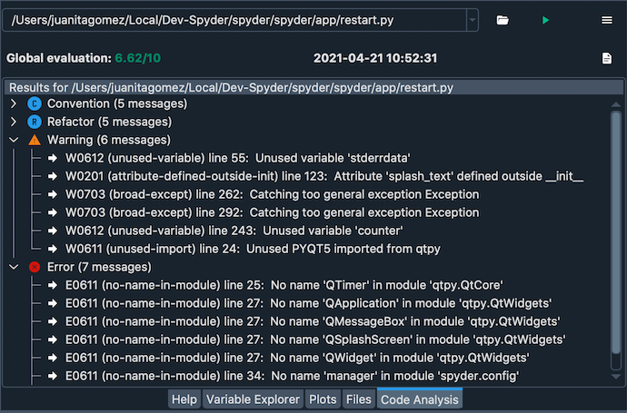
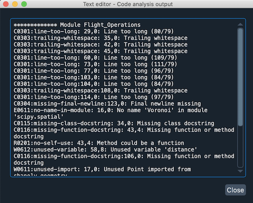
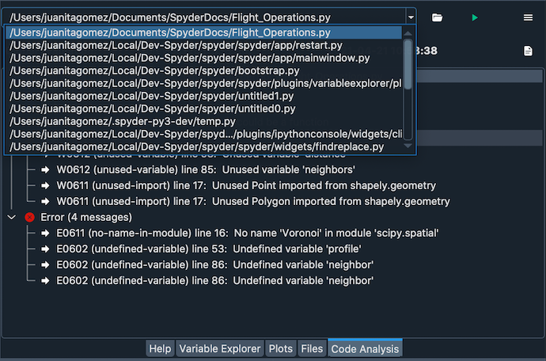

Análisis del código#
El panel Análisis del código detecta problemas de estilo, malas prácticas, posibles errores y otros problemas de calidad en tu código, todo sin tener que ejecutarlo realmente. Basado en estos resultados, también le da a tu código una puntuación de calidad general. El analizador del código de Spyder funciona con el mejor back-end de Pylint de su clase, que pueden detectar de forma inteligente una gama enorme y personalizable de posibles errores, malas prácticas, problemas de calidad, violaciones de estilo y mucho más.
Usar el analizador del código#
Puedes seleccionar el archivo deseado para analizarlo directamente en el Editor haciendo clic en cualquier lugar dentro de él. Para ejecutar el análisis, presiona el acceso directo configurable (F8 por defecto), selecciona desde la barra de menú o haz clic en el botón Ejecutar análisis del código en el panel de Análisis de código. Si el panel de análisis de código no está visible, puedes abrirlo en . Todas las comprobaciones estándar se ejecutan de forma predeterminada. Para ir directamente a una línea en el Editor que ha sido resaltada por una comprobación fallida, simplemente haz clic en su nombre.

También puedes introducir manualmente la ruta de un archivo que te gustaría comprobar en la casilla de entrada de la ruta de la barra de herramientas del panel. El analizador funciona tanto con scripts individuales como con paquetes completos de Python (directorios que contienen un archivo __init__.py).
Cancela el análisis de un archivo con el botón Detener, y si se produce un error en el análisis, haz clic en el botón Salida para averiguar por qué. Si Pylint tiene éxito, la Salida mostrará los resultados de análisis de texto sin formato en el archivo seleccionado, permitiéndote navegar y copiar/pegar fácilmente los nombres de los mensajes completos y las descripciones.
Finalmente, puedes hacer clic en el menú desplegable o pulsar la flecha desplegable en el campo nombre del archivo para ver los resultados de análisis anteriores.
Opciones avanzadas#
Puedes desactivar ciertos mensajes en el nivel de línea, bloque o archivo/módulo añadiendo un comentario # pylint: disable=MESSAGE-NAMES en el scope respectivo, donde MESSAGE_NAMES debe reemplazarse por una lista separada por comas (o valor único) de Pylint message names. Por ejemplo, una directiva podría verse como # pylint: disable=invalid-name, o # pylint: disable=fixme, line-too-long.
O bien, puedes eliminar globalmente mensajes específicos y ajustar otras configuraciones de Pylint editando el archivo de configuración .pylintrc en tu carpeta de usuario. Si no existe, puedes generarlo ejecutando pylint --generate-rcfile > . ylintrc en tu directorio de usuario, desde Anaconda Prompt (en Windows) o tu terminal (macOS/Linux). Para más detalles sobre la configuración de Pylint, consulta la Pylint documentation.